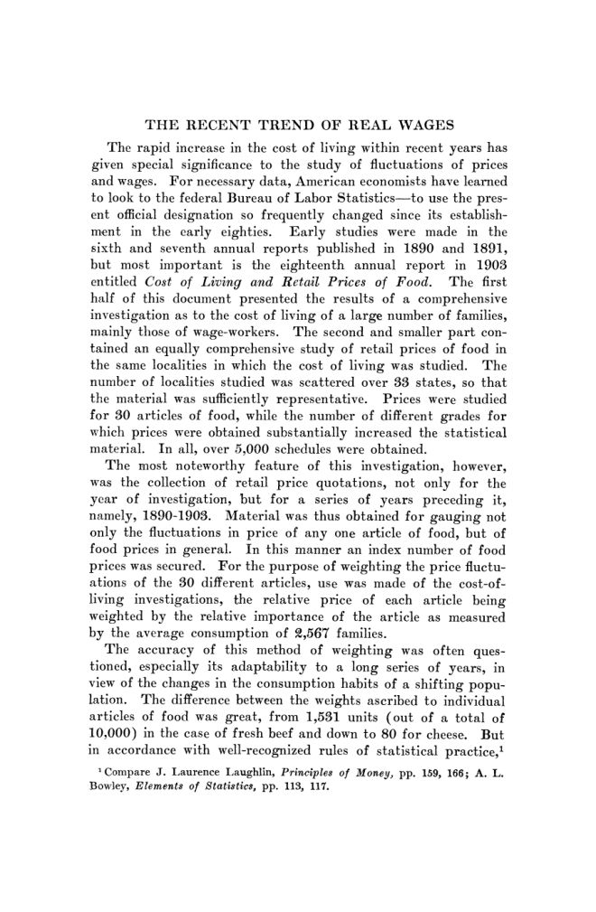

Rubinow e o índice de salários reais que o governo deixou de publicar
Leitura: 9 min
Com os boletins federais publicados depois de 1912, I. M. Rubinow reconstrói o índice de salários reais suspenso em 1908 e encontra uma perda de 12,7% no poder de compra do salário semanal entre 1907 e 1912.


O Bulletin 77 do órgão federal de estatísticas do trabalho, de julho de 1908, foi o último a publicar o índice do poder de compra dos salários nos Estados Unidos. Depois dele, durante cinco anos, não houve dado oficial sobre a pergunta mais simples da economia do trabalho: o salário compra mais ou menos do que antes? Em junho de 1914, I. M. Rubinow decidiu responder por conta própria, com os boletins que o órgão voltara a publicar em formato diferente.
O artigo, no número de dezembro de 1914 da American Economic Review, tem duas partes. A primeira é um exame minucioso das fontes, de sua construção e de suas mudanças. A segunda é a reconstrução do índice até 1912 e a interpretação do resultado.
Como o governo media o salário real?
A base era um par de investigações feitas no início do século. O 18º relatório anual, de 1903, Cost of Living and Retail Prices of Food, levantou o custo de vida de famílias de assalariados e os preços de varejo de 30 alimentos em localidades de 33 estados, com mais de 5.000 questionários, e reconstituiu a série de preços desde 1890. Os pesos de cada alimento vinham do consumo médio de 2.567 famílias. Rubinow mostra que a ponderação pouco importava: a média simples e a ponderada diferem, nos catorze anos, no máximo um ponto.
O 19º relatório, Wages and Hours of Labor, cobriu 67 indústrias, 519 ocupações e 3.475 estabelecimentos. O índice de salários por hora ponderava as indústrias pela folha de pagamento do censo de 1900, e quatro métodos de ponderação davam praticamente o mesmo resultado. Em 1905, o Bulletin 57 fez a síntese: dividiu o índice de preços dos alimentos pelo de salários semanais. A série foi atualizada até 1907 nos Bulletins 59, 65, 71 e 77, sempre com base 100 na média de 1890–1899.
Por que o índice antigo era citado na política?
A série ganhou popularidade, observa Rubinow, porque se acreditava que provava a prosperidade crescente do assalariado. O manual de campanha republicano de 1904 a citava, e o próprio boletim oficial de 1907 registrava que o salário de 1906 comprava 1% mais comida que o de 1905. Na polêmica política, houve quem acusasse os números de terem sido feitos sob medida para o governo.
Rubinow rejeita a acusação e lê os números de outro modo. Uma alta contínua, por pequena que fosse, se acumularia; a série mostra, ao contrário, oscilações em torno do mesmo nível. Com médias móveis de cinco anos, o poder de compra atinge o ponto mais alto no fim do século XIX, quando os salários correram um pouco à frente dos preços, e tende a cair depois.
O que mudou nas estatísticas depois de 1907?
As duas séries foram suspensas sem explicação oficial. Rubinow registra o rumor de que a causa seriam críticas de economistas aos métodos, mas considera mais plausível o excesso de trabalho com o relatório sobre mulheres e crianças assalariadas, encomendado pelo Congresso em janeiro de 1907 e concluído no fim de 1911. A série de preços voltou no fim de 1912, no Bulletin 105, e passou a sair a cada dois meses.
A série nova era mais estreita: 15 alimentos em vez de 30, 39 cidades industriais em vez de 68 localidades, cerca de 675 comerciantes informantes em vez de mais de mil. Saíram café, chá, melaço, arroz, ameixas e carnes salgadas, que, segundo o autor, provavelmente subiam menos que o filé, a costeleta de porco e os ovos frescos que ficaram. O órgão recalculou o índice antigo com os 15 itens, e a diferença cresceu: em 1907, o índice novo marca 125,9, e o antigo, 120,6.
Como Rubinow refez o índice de salários?
Os dados de salários só voltaram em agosto de 1913. Até junho de 1914 saíram sete boletins, mais detalhados que os antigos, mas sem índice geral e sem índice de salário real. Cinco tratavam de indústrias específicas, de têxteis a vagões ferroviários, com muito mais estabelecimentos: na madeira, 301 contra 56; nos móveis, 199 contra 58. Outro, o Bulletin 131, trazia escalas sindicais de 1907 a 1912 em 39 cidades de 32 estados, mas com nova base, o ano de 1907.
Rubinow testou se as escalas sindicais eram comparáveis com a série antiga, que misturava trabalho sindicalizado e não sindicalizado. Para 1907, os valores quase coincidem: o salário-hora do pedreiro era de US$ 0,6313 na série antiga e de US$ 0,6280 só para sindicalizados. Converteu então tudo à base de 1890–1899 e tirou a média simples de quinze séries. O teste decisivo foi comparar essa média com o índice oficial nos anos em que os dois existem: entre 1890 e 1907, a diferença só chega a um ponto em dois anos, e a média fica abaixo de meio ponto.
O que dizem os números reconstruídos?
Entre 1907 e 1912, o salário por hora subiu de 129,3 para 141,5, ou 9,4%. As horas semanais caíram 2,2%, e o salário semanal subiu apenas 7%. Os preços dos alimentos subiram 22,5%. O poder de compra de uma hora de trabalho caiu 10,6%.
O autor reconhece que seu índice é mais pessimista que o oficial já antes de 1907 e examina a diferença coluna por coluna. Horas e salários por hora praticamente coincidem com os números oficiais; a diferença está no índice de preços, que não é dele, e sim o novo índice oficial de 15 alimentos. A conclusão resiste à correção.
“Esta é, seguramente, uma conclusão estatística grave.” (“This is surely a grave statistical conclusion.”)
Rubinow amplia o argumento para a história do meio século. Os salários reais subiram nas décadas de 1870 e 1880 sobretudo porque os preços caíam, num período de depressão quase contínua; depois da guerra com a Espanha, na prosperidade, os salários subiram, mas os preços subiram mais. Preços em queda aumentam o poder de compra em tese, mas vêm com desemprego; a prosperidade traz salários mais altos e preços ainda mais altos.
Por que o padrão de vida parecia melhorar?
Rubinow antecipa a objeção de que o assalariado se vestia e morava melhor, com banheira, gás, eletricidade e cinema. Responde que o padrão de vida da família pode subir sem que suba a remuneração do trabalho. O número de crianças com menos de quinze anos por mil habitantes caiu de 381 em 1880 para 321 em 1910, quase 16%. A participação das mulheres entre as pessoas com ocupação remunerada passou de 13% em 1870 para 21,2% em 1910, ou 19,3% depois de uma correção que o autor faz na contagem das trabalhadoras rurais.
Famílias menores e mais pessoas trabalhando permitiram viver melhor, diz o autor, mas não significam retorno maior pelo trabalho. O poder de compra dos salários teria subido um pouco entre 1870 e 1890 e caído depressa desde 1900, e em 1913 não estaria muito acima do de 1870. Como a produtividade do trabalho cresceu muito no período, Rubinow conclui que uma parcela menor do valor produzido chegava ao assalariado.
Na minha leitura
Na minha leitura, o artigo vale menos pela conclusão do que pelo método. Rubinow trata o índice como um instrumento cuja construção precisa ser auditada: testa ponderações, compara médias simples e ponderadas, verifica se a amostra de escalas sindicais representa o conjunto e, sobretudo, mede o novo índice contra o antigo nos anos em que os dois existem. É assim que mostra que a cesta reduzida de alimentos exagera a alta dos preços, e é assim que valida a sua média de quinze séries de salários.
A outra lição está na distinção entre o salário por unidade de trabalho e a renda da família. Os dois podem andar em direções opostas quando muda a composição do domicílio, e boa parte do desacordo sobre o bem-estar dos assalariados vem de confundi-los. O artigo também mostra o custo de mudar a base e a cobertura das estatísticas oficiais: cada mudança obriga o usuário a refazer a ponte entre as séries, e sem a ponte a pergunta deixa de ter resposta.
Glossário
- Salário real
- salário em dinheiro dividido por um índice de preços; mede o que o salário compra.
- Número-índice
- média de variações em relação a um período-base igualado a 100; aqui, a média de 1890–1899.
- Ponderação
- atribuição de pesos diferentes aos itens de um índice, conforme a sua importância no gasto ou na folha de pagamento.
- Escala sindical (union scale)
- salário e jornada fixados em acordo com os sindicatos de um ofício.
- Média móvel
- média de um número fixo de anos consecutivos, usada para suavizar oscilações de uma série.
Fontes
- The Recent Trend of Real Wages — I. M. Rubinow (pp. 793–817). JSTOR · Internet Archive (PDF)
- Edição completa, com os demais artigos: Nº 133 do Arquivo.
Documento em domínio público (EUA, publicado antes de 1931), via JSTOR Early Journal Content e Internet Archive. Resumo e comentário do autor deste site, sem afiliação com a American Economic Association. Encontrou um erro? Escreva: a correção é publicada no próprio texto, com data.
↑ Nº 133 · Salários que perdem para a comida e a nova Federal Trade Commission Stevens e a lei que criou a Federal Trade Commission →